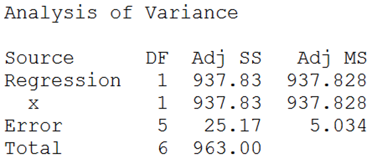
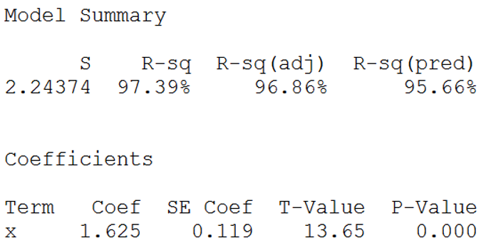
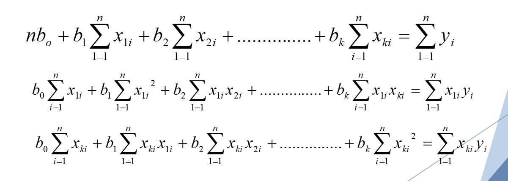
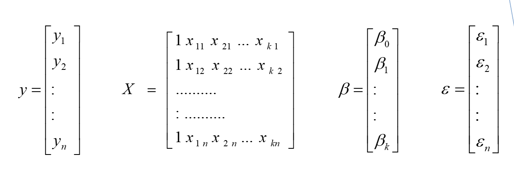

Regression¶
If β0 = 0 we can take it out of the model. This would mean that the y-intercept is zero. In the simple linear model, we are left with y = β1X + ε Thus we have a straight line that passes through the origin.
Formulas¶
If we don’t have β0 in the model, our formulas for calculating quantities involved with simple linear regression will change. Our original least squares formula for solving for b1 is:
But if we take β0 out of the model, we estimate β1 with a new formula:
Taking the y-intercept out of the equation may not produce a better model. We would try regression through the origin if we saw that the p-value for β0 was not significant.
Example
X = the number of salespeople on the floor
Y = the daily sales in thousands of dollars
Sample Data:
X = {5, 6, 7, 8, 9, 10}
Y = {7, 8, 9, 12, 15, 20}
Now let’s look at the regression through the origin. The regression model is: \(y = β_1X + ε\)
X |
Y |
|---|---|
5 |
7 |
6 |
8 |
7 |
9 |
8 |
12 |
9 |
15 |
10 |
20 |
X |
Y |
XY |
X^2 |
|---|---|---|---|
5 |
7 |
35 |
25 |
6 |
8 |
48 |
36 |
7 |
9 |
63 |
49 |
8 |
12 |
96 |
64 |
9 |
15 |
135 |
81 |
10 |
20 |
200 577 |
100 355 |
\(\frac{\sum{xy}}{\sum{x^2}} = \frac{577}{355} = 1.62535\)
Minitab output¶
{kind=link}
Degrees of freedom for error and total have increased by 1 compared to our regular simple linear model. The sums of squares have all increased (not by a constant amount).
{kind=link}
There is no longer a Constant term to estimate under ‘Coefficients’
Prediction equation¶
From the Minitab output we can find the prediction equation for our model through the origin:
We could find a confidence interval for β1 as we have done before, but now SEβ1 is different from the original simple linear model.
Note on R^2¶
In the full simple linear model for the department store example we found:
model: \(y = β_0 + β_1X + ε\)
r2 = 0.9212
In the regression through the origin we have:
model: \(y = β_1X + ε\)
r2 = 0.9739
Multiple Regression¶
Multiple Regression is an extension of simple linear regression that allows for more than one independent variable (X1, X2, …, Xk) By using multiple independent variables we should get a better explanation for the variation in Y, and thus be able to make more accurate predictions.
Example
Let Y be the monthly sales revenue for a company. This might be a function of several variables:
X1 – advertising expenditure
X2 – time of year
X3 – size of inventory
We want to predict Y using knowledge of X1, X2, and X3.
Questions we might ask include:
How well does the model fit?
How strong is the relationship between Y and the predictor variables?
Have any assumptions been violated?
How good are the estimates and predictions?
We collect information using n observations on the response Y and the independent variables X1, …, Xk
General Linear model¶
The contribution of each X_𝑖 to the model is determined by β_𝑖. (Each variable will have an associated β value) So the General Linear Model for multiple regression is of the form:
Y is the response (dependent) variable that we want to predict
β_0 〖, β〗_1, β_2, …, β_𝑘 are regression coefficients
X_1, X_2, …, X_𝑘 are independent predictor variables
ε is random error
Each regression coefficient, β_𝑖, is estimated by bi from the sample data using the method of least squares. The estimated response is:
Which is equivalent to
Differentiating SSE with respect to b0, b1, …, bk and equating to zero we generate the set of (k + 1) normal equations for multiple linear regression.
{kind=link}
Didn’t want to write out the above
Estimating the coefficients¶
We can then solve for b0, b1, …, bk by solving the system of normal equations. Most often, statistical software is used to solve these equations. We will look at the method of matrix algebra to solve the system of equations.
{kind=link}
Then to solve for the least squares estimates we have: SSE = (y – Xb)’(y – Xb)
where b is the vector containing the estimated coefficients
To minimize SSE we take the derivative and set equal to zero
𝑑/𝑑𝒃 𝑆𝑆𝐸=0
This will produce the equation:
(X’X)b = X’y
Now solving for b we get:
b = (X’X)-1X’y
Regression assumptions¶
Remember that the results of a regression analysis are only valid when the necessary assumptions have been satisfied. Assumptions:
ε are independent
ε have a mean of zero
ε have a common variance σ2
ε follow a normal distribution
Diagnostic Tools¶
The same tools are used for multiple regression as those discussed for simple linear regression to check the normality assumption and the assumption of equal variances.
- Normal probability plot of residuals
Should be a straight line with an upward slope
- Residuals versus Fit
Should be randomly scattered around zero
Analysis of Variance¶
The total variation in the experiment is measured by the total sum of squares SST. The total SS is divided into two parts:
SSR (sum of squares for regression) measures the variation explained by using the regression equation.
SSE (sum of squares for error) measures the leftover variation not explained by the independent variables.
Multi Regression ANOVA table¶
The ANOVA table for multiple regression has the general form:
Source |
DF |
SS |
MS |
F |
|---|---|---|---|---|
Regression |
K(number of vars) |
SSR |
MSR |
MSR/MSE |
ERROR |
n-(k+1) |
SSE |
MSE = S^2 |
|
TOTAL |
n-1 |
SST |
Notice that the degrees of freedom for Total is still (n – 1), this is the same as simple linear regression.
The degrees of freedom for Regression is k because our model as k independent variables. \(Y = β_0 + β_1 X_1 + β_2 X_2 + … + β_𝑘 X_𝑘 + ε\)
The degrees of freedom for Error is [n – (k + 1)] Error df is always n minus the number of beta’s that have been estimated in the model.
The Mean Square (MS) values are calculated as with a simple linear regression: the sum of squares divided by its degrees of freedom.
Testing Model Usefullness¶
Similar to simple linear regression, the F value in the ANOVA table is used to test the model’s usefulness. If the model is useful (the Xi values contribute information to Y) then MSR will be large compared to MSE. If the model is not useful then the value of Y does not change regardless of the value of the independent variables. This implies that the regression coefficients are all zero. (β_1 = β_2 = … = β_𝑘 = 0)
H0: the model is not useful in predicting Y
Ha: the model is useful in predicting Y
Or
H0: β_1 = β_2 = … = β_𝑘 = 0
Ha: at least one β_𝑖≠ 0
Test statistic: F = 𝑀𝑆𝑅/𝑀𝑆𝐸
Reject H0 if F > 𝑓_𝛼(k, (n – k - 1))
F test¶
If we can reject H0 then we can conclude there is enough evidence to say that the model is useful.
If we cannot reject H0 then we can conclude that there is not enough evidence to say that the model is useful.
Example
A collector of grandfather clocks believes that the price received for a clock at auction depends on both age of the clocks and the number of bidders at the auction.
Y = price of clock at auction X1 = age of clock X2 = number of bidders
The model is: \(Y = β_0 + β_1 X_1 + β_2 X_2 + ε\)
Data is collected on 28 clocks. The prediction equation is found to be: \(\hat{y} = -1339 + 12.7X_1 + 86X_2\) . Is this model useful?
The ANOVA table is
Source |
DF |
SS |
MS |
F |
|---|---|---|---|---|
Regression |
2 |
4283 |
2141.5 |
? |
ERROR |
25 |
516 |
20.64 |
|
TOTAL |
27 |
4799 |
H0: β_1 = β_2 = 0
Ha: at least one β_𝑖≠ 0
Test statistic: \(F = \frac{𝑀𝑆𝑅}{𝑀𝑆𝐸}= \frac{2141.5}{20.64} = 103.75\)
Critical value: \(𝑓_𝛼(2, 25) = 3.39\)
103.75 > 3.39
Reject H0, there is evidence that the model is useful in predicting the price of grandfather clocks.
Measuring the Strength of the Relationship¶
If the independent variables are useful in predicting Y you will want to know how well the model fits. We measure the amount of variation which is being explained by the model. Multiple Coefficient of Determination
Example
In the previous example we found:
SST = 4799
SSR = 4283
SSE = 516
R2 = 4283/4799 = 0.892
89.2% of the variation in the Y values is explained by using the independent variables in the model.
Testing Individual Regression coefficients¶
Is a particular independent variable useful in the model, in the presence of all the other independent variables? The F test will test all independent variables at once. The T test will test the variables one at a time.
H0: β_𝑖=0 Ha: β_𝑖≠0
Test statistic: T = \(\frac{b_1}{SE(b_i)}\)
(where SE is the standard error for the coefficient β_𝑖)
Critical value: \(𝑡_(𝛼/2)\) (v = n – k – 1)
Reject H0 if |T| > \(𝑡_(𝛼/2)\)
Each β_𝑖 determines the contribution of each X_𝑖 to the model. If we do not reject H0 then there is not evidence that β_𝑖 is different than zero. We would conclude that Xi is not significant in the model. Perhaps the model could be refit without Xi
Confidence Intervals for Regression Coefficients¶
Perhaps we are interested in what values a particular coefficient could possibly take on and not just the point estimate, bi. We can construct a confidence interval for each β_𝑖 parameter:
Where T has v = n – k – 1 degrees of freedom
Analyzing the Model¶
Once you have created a multiple regression model containing all of the independent variables that you think will be useful, you can begin analyzing the model by:
Perform an overall F test to see if the model is useful.
How much variation is explained by the model? (Find R2)
Perform individual T tests to determine if any independent variables can be removed.
Create confidence intervals for the significant coefficients.
Adjusted R^2¶
R2 gives a measure for how much variation in the y-values is explained by the model, so a higher R2 would suggest a better model. However, whenever we add an independent variable to the regression model, R2 will always increase; even if the added variable is not significant to the model. To fairly compare two models, it is better to use a measure that has been adjusted using degrees of freedom.
Adjusted Multiple Coefficient of Determination (adj R2)¶
Adj R2 now takes into account the sample size and the number of β parameters in the model. Notice that adj R2 < R2 Despite their utility adj R2 and R2 are only sample statistics. We cannot judge the usefulness of the model based solely on these values. That is why we have the statistical F-test for model utility.
Example
Calculate R2 and adj R2 for the model displayed by the ANOVA table given below:
Source |
DF |
SS |
MS |
|---|---|---|---|
Regression |
2 |
4283 |
2141.5 |
ERROR |
25 |
516 |
20.64 |
TOTAL |
27 |
4799 |